光の表現
レイトレーシングで、氷の後ろにある背景の屈折と、厚みに応じた色の吸光を表現しています。
プログラム説明資料 p6
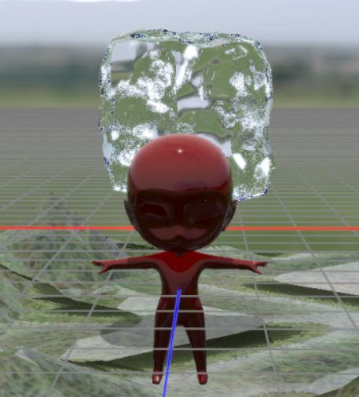
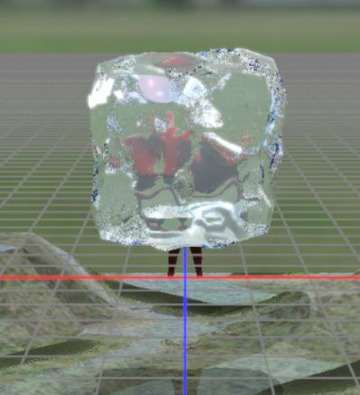
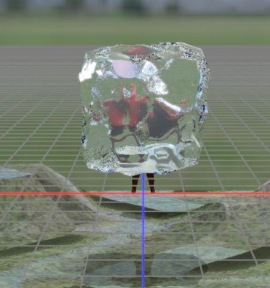
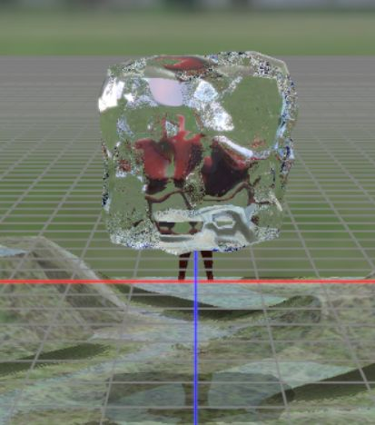
サイトウ アオイ
齋藤 蒼生
はじめまして、現在ゲームエンジンとグラフィックスの開発に取り組んでいます。
DirectX 12 で自作エンジン「AquaEngine」を作り、ゲームを制作しています。ここには、これまでに作ったゲームとエンジンについてまとめました。
目指している分野：ゲームエンジン／グラフィックスプログラマー
チーム制作では満足のいく氷の表現を作れなかったため、1人でブラッシュアップをおこなっています。テーマは「リアルな氷を表現する」ことです。
レイトレーシングで、氷の後ろにある背景の屈折と、厚みに応じた色の吸光を表現しています。
プログラム説明資料 p6




衝突したときの破壊、ひび割れ、へこみを、実行中にメッシュを変形させて再現しています。毎フレーム形が変わるメッシュはレイトレーシングと相性が悪いため、最適化にも取り組みました。
プログラム説明資料 p12
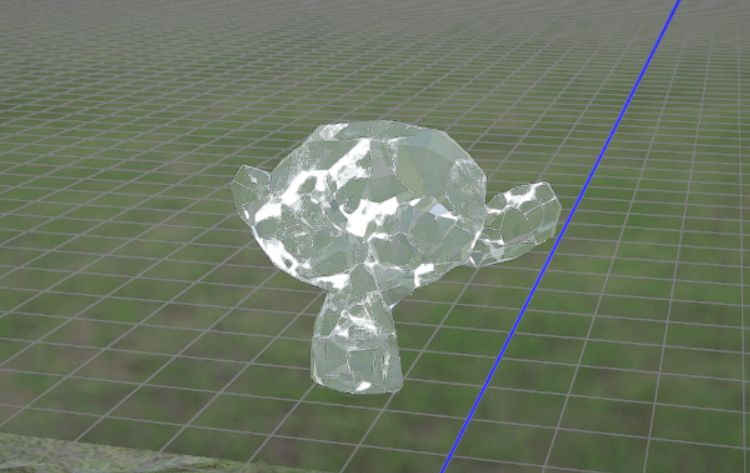
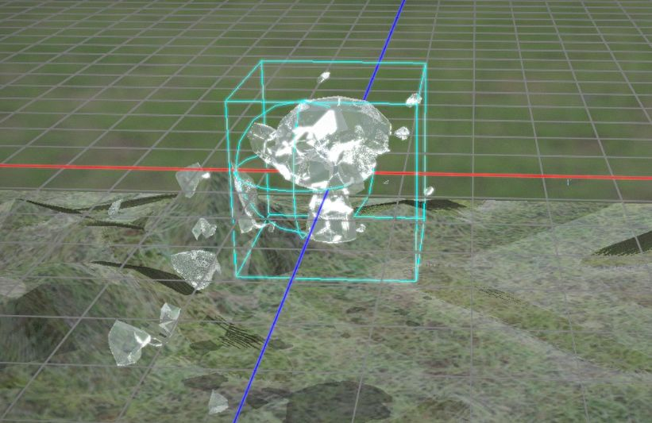
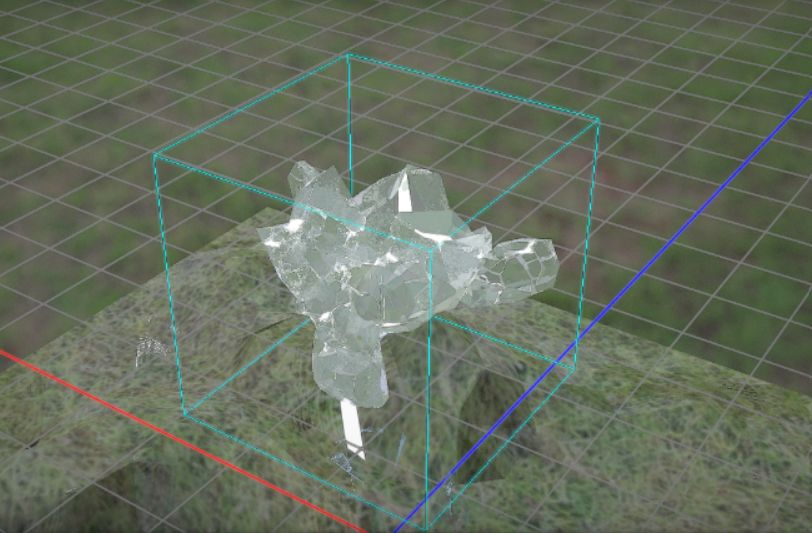
氷の見た目を試行錯誤しやすいように、ノードで組むマテリアルエディタを作りました。確認と修正を素早く繰り返せます。
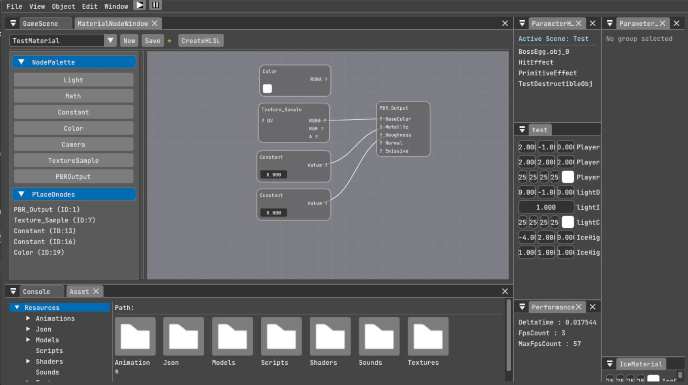
C++とDirectX 12で作った自作ゲームエンジンです。ラスタライズとDXRのレイトレーシングを同じシーンで切り替えて描画できます。
レイトレーシングの描画をできます。
DXRを使用してTLAS,BLASの動的更新メカニズムおよび、RayGeneration,ClostHit,Missシェーダーのパイプライン設計、実装をしました。
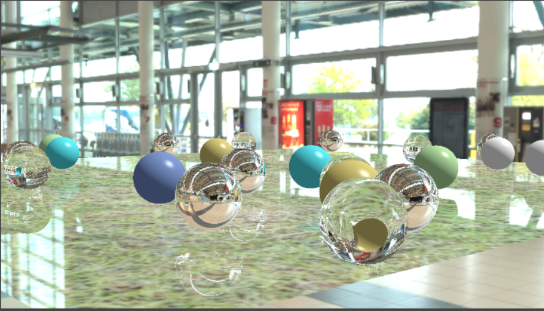
ImGuiで作ったエディタです。Undo/Redo、パラメータの調整、オブジェクトの管理ができ、ゲームを作りながら調整できます。
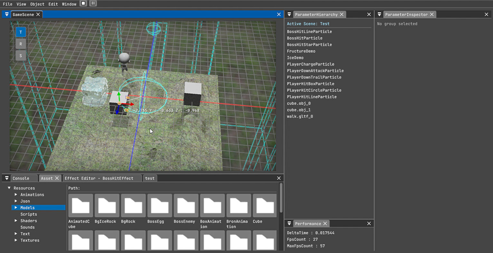
パーティクルを使い回す仕組みと、機能を組み合わせて作るモジュール構成にしています。。
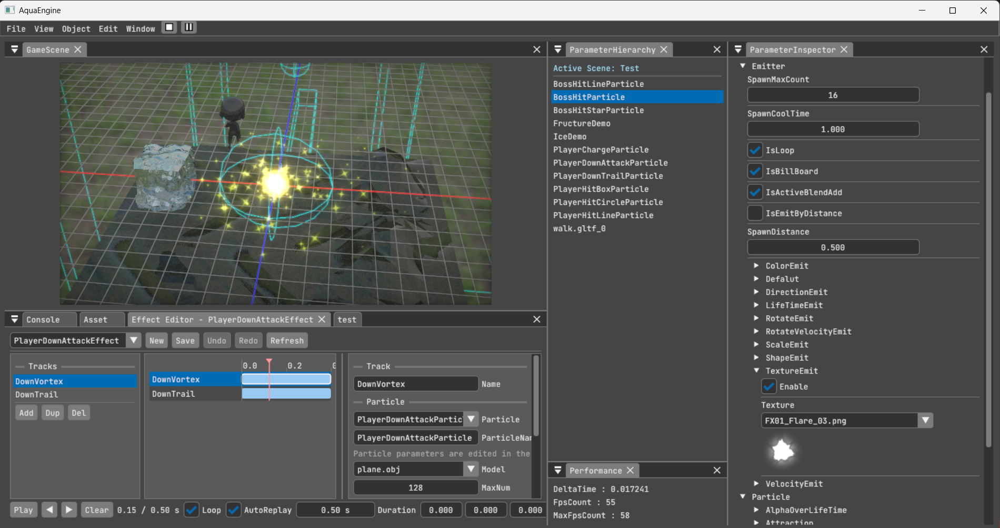
素材の質感を、光の物理に沿って自然に表現します。金属や氷など、材質の違いを描き分けられます。
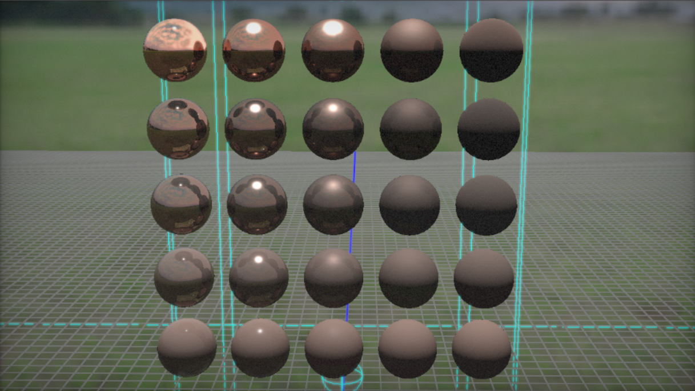
ノードをつないでマテリアルを組み立て、HLSLのコードを作れます。見た目を試行錯誤する時間を短くできます。